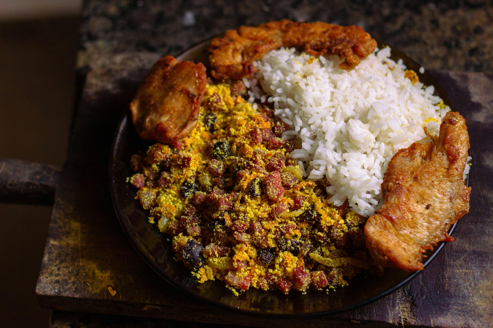
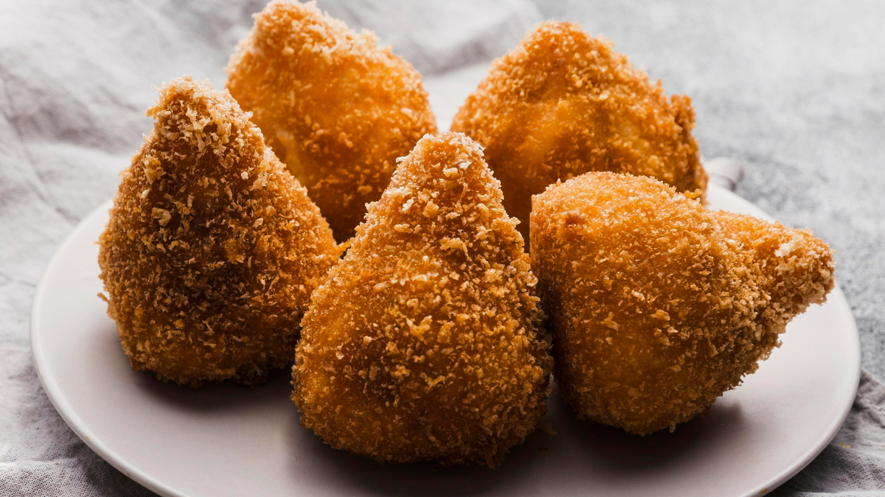
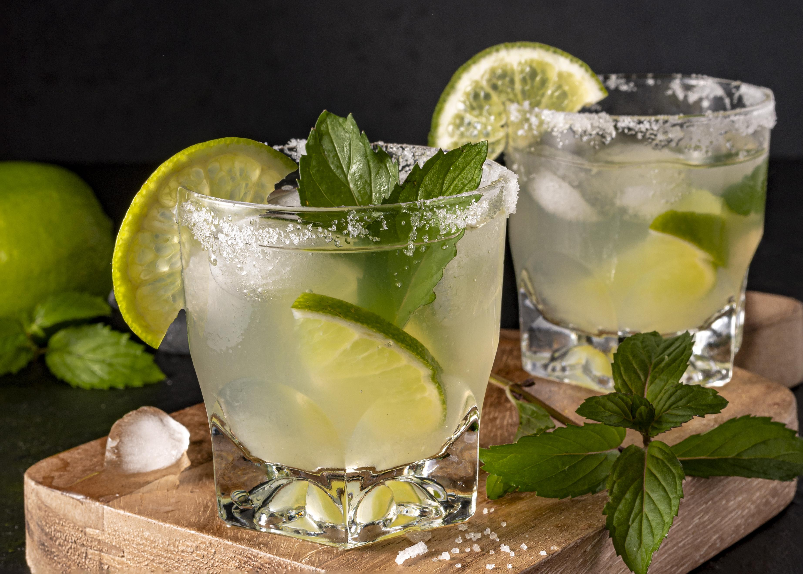
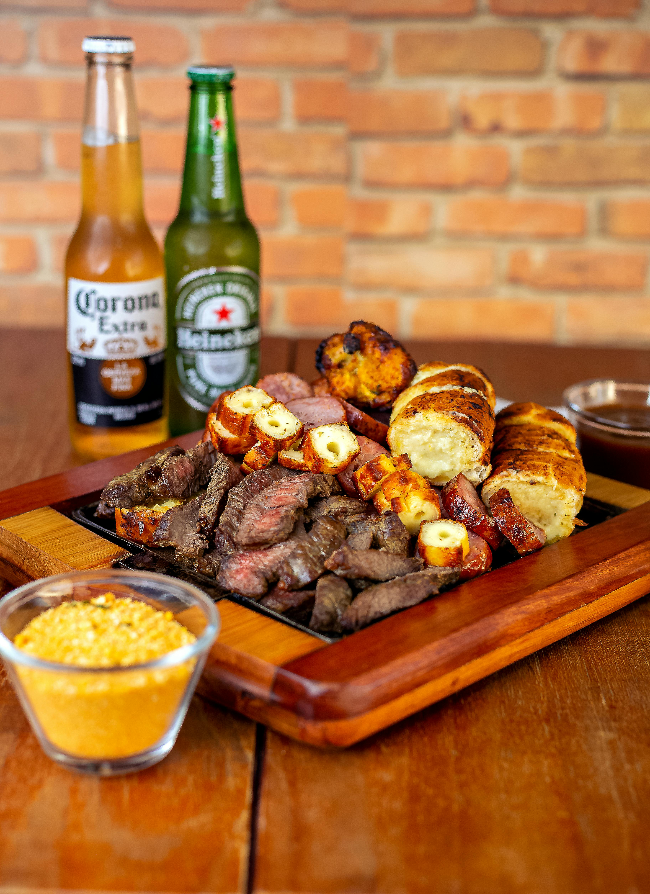
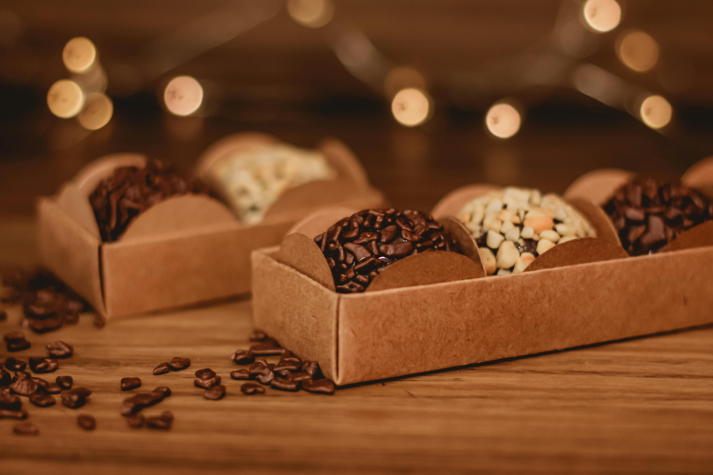

A gastronomia brasileira é unica e possui uma variedade de pratos típicos deliciosos que não tem como não amar. Como a nossa coxinha, o brigadeiro e aquela feijoada que todo mundo ama. Conheça algumas de nossas iguarias abaixo.
GASTRONOMIA BRASILEIRA
CONHEÇA AS IGUARIAS DO NOSSO PAÍS
1. Feijão tropeiro
O feijão tropeiro é um prato típico de Minas Gerais e sua origem vem dos tropeiros, que eram pessoas que transportavam a mercadoria (como alimentos e animais) entre alguns estados brasileiros, especialmente do Sul e Sudeste
Sua preparo é simples, ele é feito com Feijão carioca, ovos, bacon, linguiça calabresa, alho, cebola e o ingrediente resposavel pela sua textura: a farofa.

2. Coxinha
A coxinha é um dos pratos mais conhecidos do Brasil, sendo a queridinha dos brasileiros, podendo ser encontrada em quase todo lugar. É um salgado indispensavel nas cantinas escolares, bares, festas, lanchonetes, salgadarias e muitos mais.
Todos amam uma coxinha, geralmente ela recebe o recheio de frango desfiado, mas pode receber muitos outros dando uma grande diversidade, seja camarão, carne seca e até mesmo frango com catupiry

3. Capirinha
A capirinha é uma bebida mais conhecida do Brasil, uma bebida que te acompanha em qualquer lugar seja na praia, naquele domingo ensolarado, bares ou qualquer ambiente festivo.
A capirinha leva apenas 4 ingredientes: cachaça, limão, açúcar e gelo. Apenas esses ingredientes fazem uma experiencia unica e deliciosa cativando qualquer amante de bebidas alcoólicas.

4. Churrasco
Não existe um churrasco igual ao churrasco brasileiro, outra iguária gastronomica muito amada no brasil. O seu segredo está na variedade de carnes capaz de agradar qualquer paladar, sendo a primeira escolha para o encontro de parentes em um fim de semana.
Entre as suas variedades de carne podem se encontrar: picanha, fraldinha, maminha, linguiça toscana, coração de galinha e frango. Além de outros acompanhamentos como a farofa e o pão de alho.

5. Brigadeiro
O brigadeiro é um doce presente em quase todos ambientes festivos no Brasil. Uma pequena bolinha de chocolate coberta por brigadeiro mas seu sabor é mágico sendo uma deliciosa sobremesa para o dia a dia, além de apenas para celebrações.
O brigadeiro possui apenas 3 igredientes fundamentais: manteiga, leite condensado e chocolate em pó. Ele pode ser servido em um copo de plástico, ao invés em seu formato tradicional de bolinha. Possui uma textura aveludada, além de ser enrolado em granulado.
